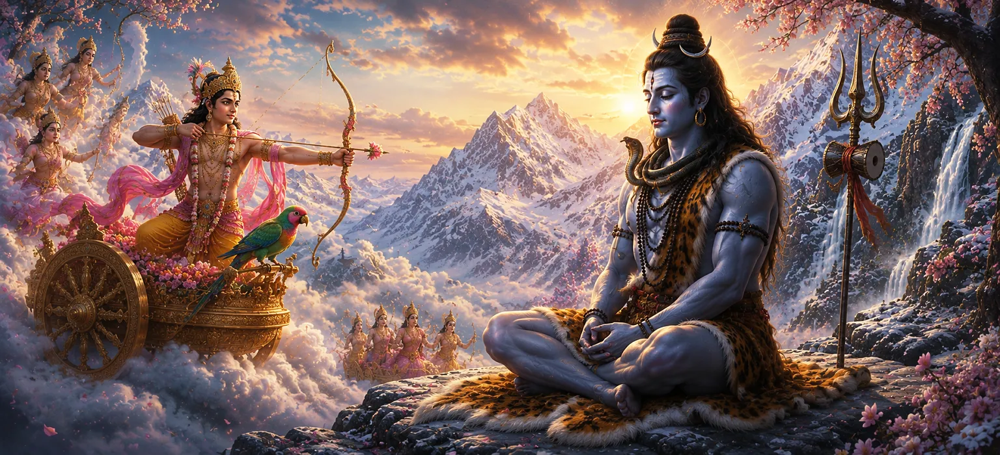

यह अध्याय बताता है कि कैसे देवताओं ने भगवान शिव को उनके गहन ध्यान से जगाने के लिए एक साहसिक योजना तैयार की। यह जानते हुए कि केवल शिव का भावी पुत्र ही शक्तिशाली राक्षस तारकासुर को हरा सकता है, देवताओं ने प्रेम के देवता काम से शिव के हृदय में स्नेह जगाने और दिव्य उद्देश्य को आगे बढ़ाने का अनुरोध किया।
तारकासुर की बढ़ती शक्ति से देवता परेशान रहने लगे। राक्षस को रोकने का हर प्रयास विफल हो गया था, और दिव्य क्षेत्र उसके प्रभाव से पीड़ित होते रहे।
देवताओं ने समझा कि शिव का पार्वती के साथ मिलन ब्रह्मांडीय योजना के लिए आवश्यक था। हालाँकि, महादेव गहन ध्यान में लीन थे और सांसारिक मामलों से अलग थे। ईश्वर द्वारा निर्धारित भविष्य की ओर उनका ध्यान आकर्षित करने के लिए एक विशेष प्रयास की आवश्यकता थी।
जब देवता काम के पास पहुंचे, तो उन्हें मिशन के महत्व का एहसास हुआ। हालाँकि वह भगवान शिव के ध्यान में हस्तक्षेप करने के जोखिमों को जानता था, फिर भी वह ब्रह्मांड के कल्याण के लिए मदद करने के लिए सहमत हो गया।
वसंत की भावना के साथ, सुगंधित फूल, हल्की हवाएं और खिलते पेड़ों ने हिमालय के परिवेश को बदल दिया। पवित्र परिदृश्य में सुंदरता फैलते ही प्रकृति स्वयं काम के मिशन का समर्थन करती प्रतीत हुई।
काम ध्यान से उस स्थान पर पहुंचे जहां भगवान शिव ध्यान में बैठे थे। जैसे ही प्रेम के देवता अपने कठिन और ऐतिहासिक कार्य को पूरा करने के लिए तैयार हुए, पूरा ब्रह्मांड थम गया।
महान मिशनों के लिए अक्सर साहस और निस्वार्थता की आवश्यकता होती है।
प्रेम लौकिक प्रयोजन का साधन बन सकता है।
नियति को पूरा करने के लिए ईश्वर कई शक्तियों के माध्यम से कार्य करता है।
काम को भेजने का निर्णय कहानी में एक महत्वपूर्ण मोड़ था। देवताओं का भविष्य, तारकासुर की पराजय, और शिव और पार्वती का मिलन सभी उन घटनाओं से जुड़े थे जो जल्द ही सामने आने वाली थीं।
यह अध्याय सिखाता है कि दिव्य मार्गदर्शन के माध्यम से असंभव प्रतीत होने वाली परिस्थितियों को भी बदला जा सकता है। बड़ी योजना में प्रत्येक व्यक्ति की भूमिका होती है, और दूसरों के कल्याण के लिए किए गए ईमानदार प्रयास गहरा आध्यात्मिक मूल्य रखते हैं।
काम ने भगवान शिव की अपार शक्ति और उनके ध्यान को भंग करने के खतरे को समझा। फिर भी उन्होंने ब्रह्मांड के कल्याण को अपनी सुरक्षा से ऊपर रखते हुए आगे बढ़ना चुना।
वसंत का आगमन नवीनीकरण, आशा और परिवर्तन का प्रतीक है। शिव के चारों ओर खिलती हुई दुनिया आने वाले परिवर्तन को दर्शाती है जो जल्द ही देवताओं और मनुष्यों के भाग्य को समान रूप से प्रभावित करेगी।
"यहां तक कि सबसे छोटा कार्य भी, जब ईश्वर द्वारा निर्देशित हो, ब्रह्मांड की नियति को बदल सकता है।"
भगवान शिव को जगाने के खतरनाक मिशन को स्वीकार करने के बाद, काम वसंत की सुंदरता के बीच ध्यानमग्न महादेव के पास पहुंचे। इस दिव्य मिशन के नाटकीय परिणाम को देखने के लिए अगले अध्याय को जारी रखें क्योंकि शिव ने अपनी तीसरी आंख खोली और काम का भाग्य हमेशा के लिए बदल गया। यह महत्वपूर्ण घटना शिव पुराण के सबसे यादगार प्रसंगों में से एक बन जाती है।